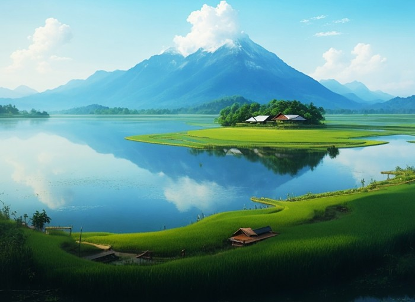

Profil Penulis
Nama : Ahmad Khoirudin
Email :ahmad@gmail.com
No Wa : 0812-3456-7890
IG : @ahmad
Pengalaman Belajar Ngoding

Hari ini, selasa 10 September 2024, saya melanjutkan mengikuti kursus yang diadakan oleh yayasan IDM yaitu bagaimana cara membuat website dari awal menggunakan html, css dan nantinya juga akan belajar javascript. Dalam Proses ini kami memiliki mentor yaitu Bapak Arizal dan juga teman seperjuangan.
Tentang Penulis
Saya suka menulis dan membuat blog karena dengan menulis saya seperti bisa menceritakan sesuatu yang terlintas di pikiran saya. Ini menyenangkan, sebab saya menjadi terlatih untuk berpikir dan bekerja dengan lebih cepat.